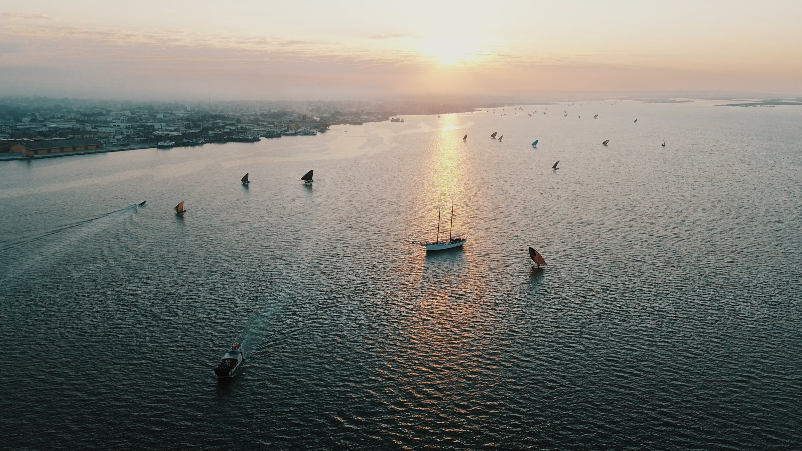
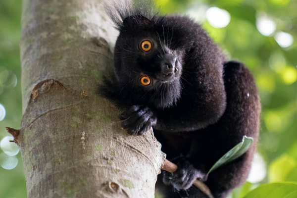
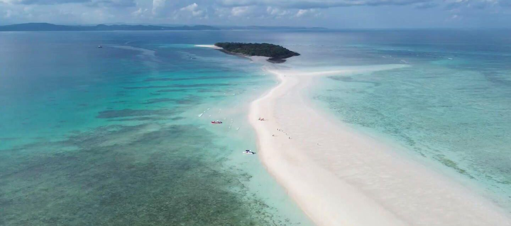
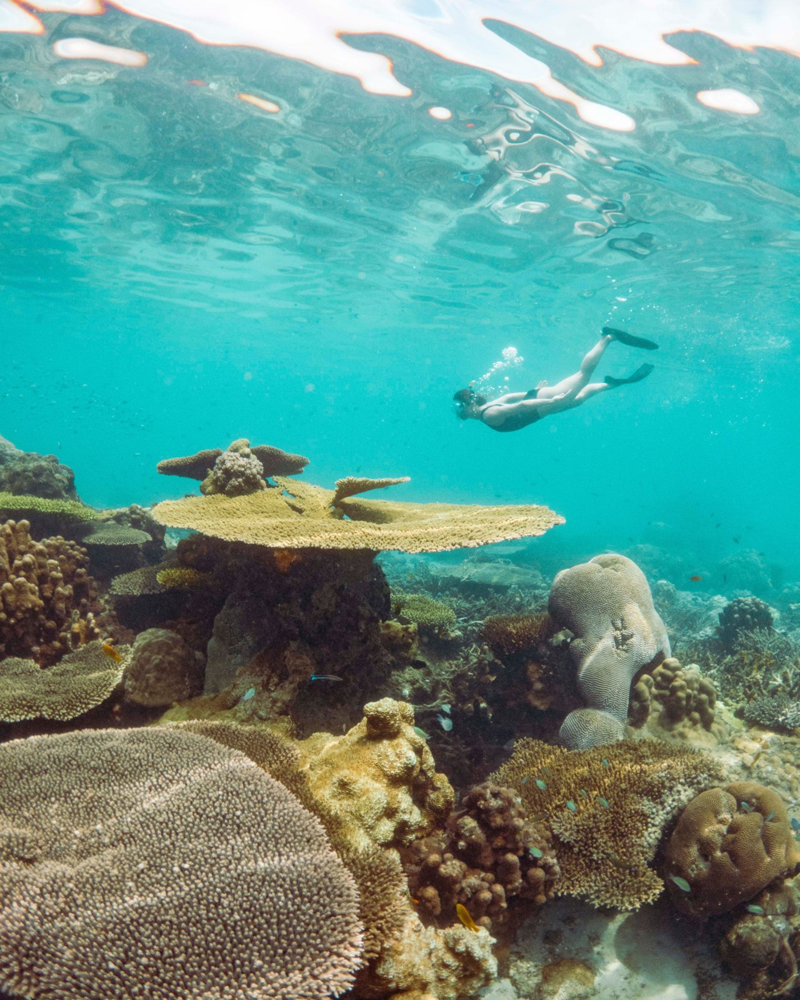
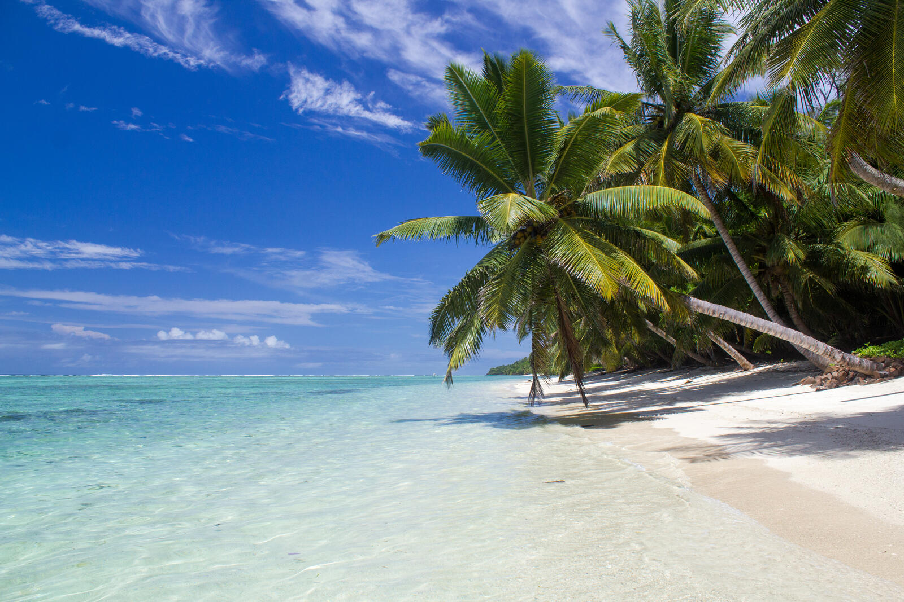
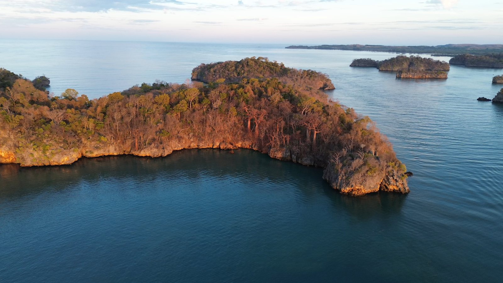
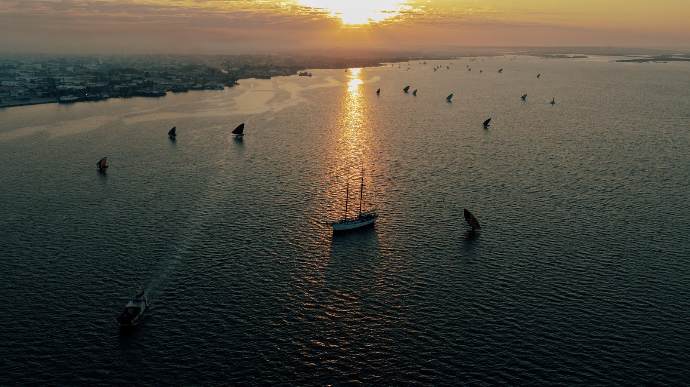
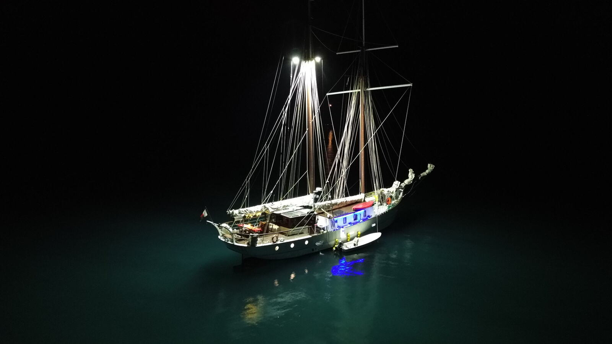
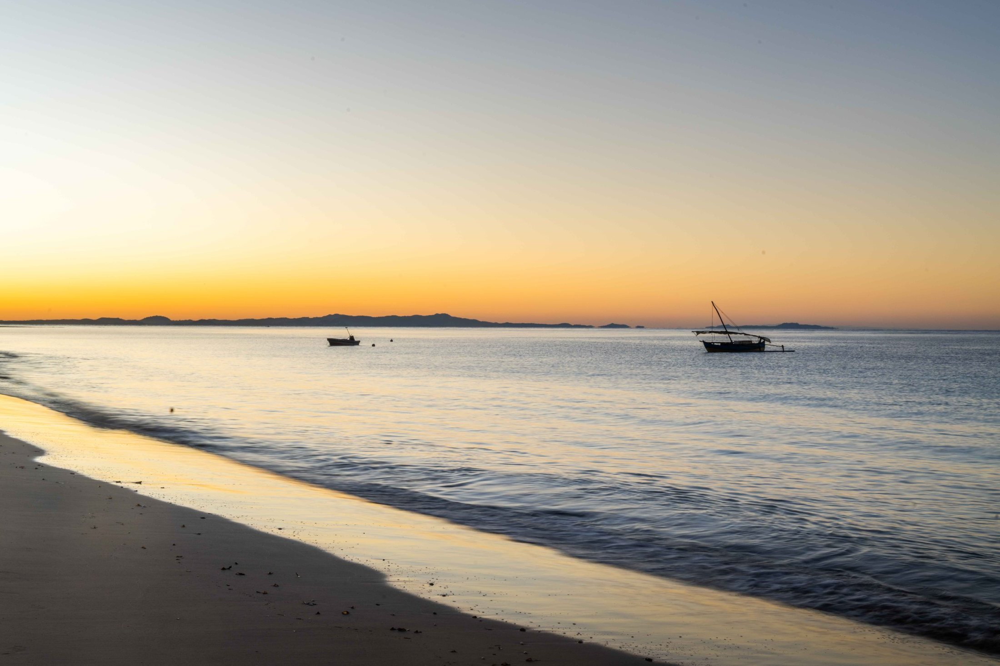

Nosy Be to Mahajanga.
Ten days along Madagascar's wild northwest coast, between remote islands, reefs and some of the Indian Ocean's quietest anchorages.
A coast few people ever see.
This is the voyage that shows what Luna Moon was built for. Each day brings a new anchorage, with turquoise water, empty beaches and Malagasy village life on shore.
The order below is a guide. The captain adjusts the plan around weather, tides and what your group enjoys most.

DepartureNosy Be
Madagascar's “Perfume Island”, scented with ylang-ylang and vanilla. Before heading south, snorkel at Nosy Tanikely and Sakatia and meet the wild lemurs and beach market of Nosy Komba.

Days 2–3Russian Bay & Nosy Iranja
A sheltered bay named after a Russian warship whose crew, the story goes, chose Madagascar over the 1905 war. Then Nosy Iranja: a white sandbar joining two islands at low tide, turtle nesting beaches and a lighthouse designed by Gustave Eiffel in 1909.

Days 4–5Radama Islands & Kalakajoro
Four quiet islands named after King Radama I, who was crowned at 17 and went on to unite much of Madagascar. Coral reefs, secluded coves and some of the best snorkelling and fishing of the trip.

Day 6Nosy Lava
A remote island of limestone cliffs, palms and white sand. Walk through the ruins of the colonial-era prison that closed in 2002.

Days 7–8Baie de Moramba
Mushroom-shaped limestone tsingy, mangroves and emerald water, often called a miniature Halong Bay. Explore by tender and kayak while parrots call from the cliffs.

Days 9–10Mahajanga & Katsepy
Journey's end in a lively port shaped by African, Arab, Indian and French influences. Walk the baobab-lined promenade, then cross the bay to Katsepy to see crowned sifaka.
Prefer a week around Nosy Be?
Not doing the full voyage? Our private charters stay among the islands around Nosy Be, with calm water and short hops between anchorages.
Barefoot luxury, under sail.
Spacious decks for doing nothing, and hands-on sailing for anyone who wants it. Fresh seafood, tropical fruit and Malagasy spices at every meal. Evenings under more stars than you have ever seen.

Adventurous families and friends.
Built for one group of up to 11 guests who want more than a beach holiday. Experienced sailors and first-timers are equally welcome.
Fly, drive or sail it in reverse.
Fly into Nosy Be and out of Mahajanga, or take the two-day road trip back north. The voyage also runs the other way, starting in Mahajanga.
From Mahajanga you can continue to the baobabs of Morondava or the Emerald Sea near Antsiranana. The Madagascar Collection plans onward travel

Sail the whole coast.
Ask about voyage dates for the coming season.